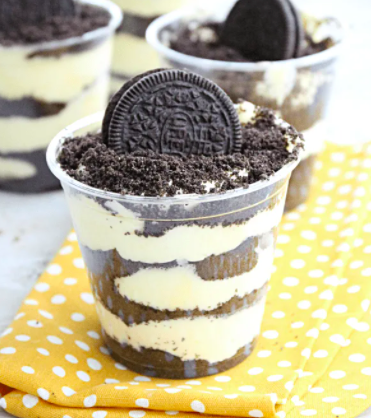

Oreo Pudding Dessert

This is where I'd like to talk a little bit about the history and why I love this dessert.
It makes me so happy to eat this, and everytime I do, I am never disappointed. We all love it in my family and keep coming back to it everytime
Ingredients
- 1 bag Oreos
- 1 box french vanilla pudding
- 2 cups milk
- 1 - 8 ounce cream cheese
Steps to make
- Make pudding
- Crush Oreos
- Mix 3/4 of Oreos, cream cheese, and pudding
- Put the remaining Oreos on top
Back to Homepage